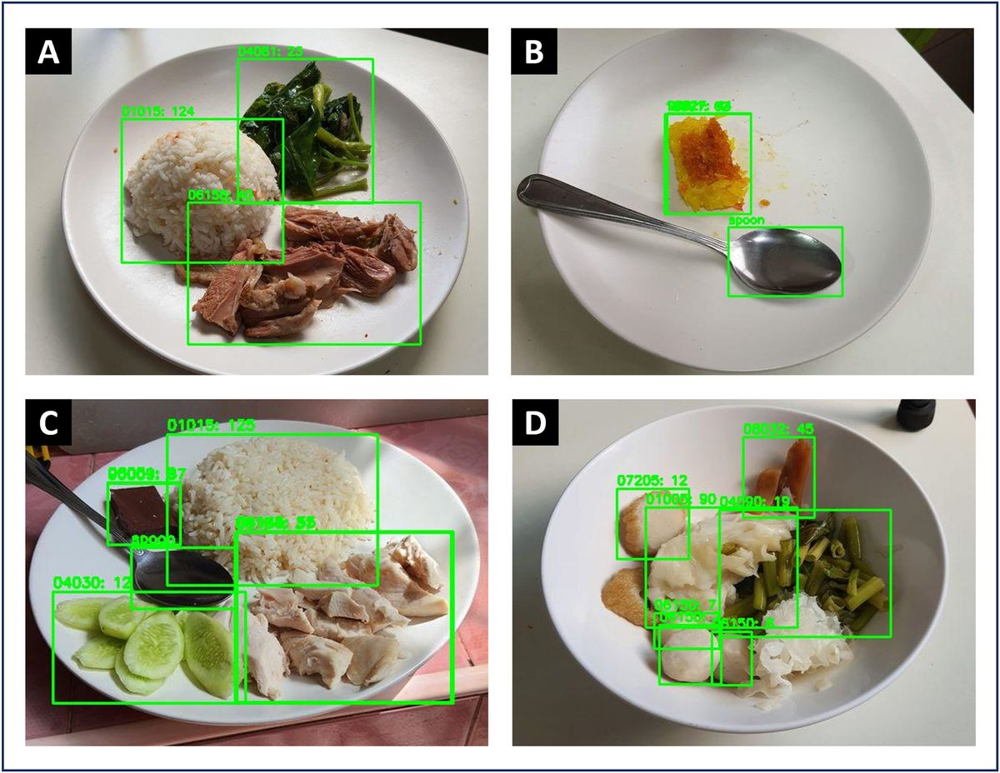
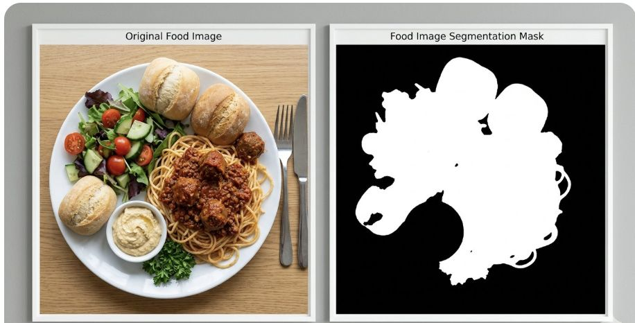

Finding and recognizing the food
Almost every system reviewed here follows the same three steps: find each food, name it, then outline it so its size can be measured.
Step 1: Detection (where is each food?)
Detection finds each food item and draws a bounding box around it. For an LV user, this is the step that answers "where?". There are two main families of detectors. Two-stage detectors such as Faster R-CNN first propose regions that might contain an object and then classify each region, which is accurate but slower. One-stage detectors such as YOLO (You Only Look Once) predict boxes and classes in a single pass over the image, which makes them fast enough to run on a phone.
A 2025 study by Chrintz-Gath and colleagues compared three YOLO versions, YOLOv7, YOLOv8, and YOLOv9, on a custom dataset of 3,707 annotated meal photos covering 42 food classes [4]. Their goal was to check whether a meal follows the Swedish plate model, which recommends how much of the plate should be vegetables, carbohydrates, and protein. They used preprocessing and data augmentation to make the models more robust, and measured precision, recall, mAP, and F1 score. YOLOv8 had the best peak precision and F1 score of the three. The newest version was not automatically the best, which is a useful lesson when choosing a model.

Step 2: Classification (what is it?)
Classification gives each detected item a name. Early systems used hand-designed features such as color histograms and texture patterns. The Food-101 paper, for example, used random forests to find discriminative parts of food images across 101 food classes [8]. A full history of these older methods is in the food computing survey by Min and colleagues [9]. Today, convolutional neural networks (CNNs) and vision transformers are standard. They learn their own features from data and are much more accurate.
The newest option is vision-language models (VLMs), such as GPT, Gemini, and Claude, which can name food from a photo and a text prompt without any food-specific training [10]. Benchmarks show they are good at common foods but still behind specialized models: on the January Food Benchmark, a specialized food model scored 86.2 overall, while the best general-purpose setup (GPT-4o) scored 74.1 [11].
Algorithm in detail: training a food classifier with transfer learning
Most food classifiers are not trained from scratch, because food datasets are small compared to general image datasets. Instead they use transfer learning. The code below fine-tunes MobileNetV2, a small CNN designed for phones, on a food dataset such as Food-101. It is adapted from the official TensorFlow transfer learning tutorial [12].
import tensorflow as tf
from tensorflow.keras import layers
IMG = 224
NUM_CLASSES = 101 # e.g. Food-101
train_ds = tf.keras.utils.image_dataset_from_directory(
"food/train", image_size=(IMG, IMG), batch_size=32)
val_ds = tf.keras.utils.image_dataset_from_directory(
"food/val", image_size=(IMG, IMG), batch_size=32)
# 1. Load a backbone already trained on ImageNet, without its classifier
base = tf.keras.applications.MobileNetV2(
input_shape=(IMG, IMG, 3), include_top=False, weights="imagenet")
base.trainable = False # 2. Freeze it
# 3. Add a new head for food classes
inputs = tf.keras.Input(shape=(IMG, IMG, 3))
x = layers.RandomFlip("horizontal")(inputs) # augmentation
x = layers.RandomRotation(0.1)(x)
x = tf.keras.applications.mobilenet_v2.preprocess_input(x)
x = base(x, training=False)
x = layers.GlobalAveragePooling2D()(x)
x = layers.Dropout(0.2)(x)
outputs = layers.Dense(NUM_CLASSES, activation="softmax")(x)
model = tf.keras.Model(inputs, outputs)
# 4. Train only the new head
model.compile(optimizer="adam",
loss="sparse_categorical_crossentropy",
metrics=["accuracy"])
model.fit(train_ds, validation_data=val_ds, epochs=5)
# 5. Fine-tune: unfreeze the top layers with a small learning rate
base.trainable = True
for layer in base.layers[:-30]:
layer.trainable = False
model.compile(optimizer=tf.keras.optimizers.Adam(1e-5),
loss="sparse_categorical_crossentropy",
metrics=["accuracy"])
model.fit(train_ds, validation_data=val_ds, epochs=5)Here is what each part does:
- Load a pretrained backbone. MobileNetV2 was already trained on ImageNet, 1.4 million images of everyday objects. Its early layers have learned to detect edges, colors, and textures, which are just as useful for food. Setting
include_top=Falseremoves its original 1,000-class output layer. - Freeze it. At first, the backbone's weights are locked so the large, random updates from the new layer do not destroy what it already knows.
- Add a new head. Global average pooling turns the feature map into one vector, dropout reduces overfitting, and a dense layer with softmax outputs one probability per food class. The random flips and rotations are data augmentation, which helps with phone photos taken at odd angles.
- Train the head. Only the new layers learn during the first few epochs.
- Fine-tune. The top 30 layers of the backbone are unfrozen and trained with a very small learning rate, so they adapt to food-specific details without forgetting their general knowledge.
When to use something else. MobileNetV2 is a good choice when the model must run on the phone itself. EfficientNet or a vision transformer is more accurate but heavier, so it suits a cloud server. A VLM needs no training at all and can name unusual dishes, but it is slow, needs internet, and is weaker on fine details.
Step 3: Segmentation (exactly which pixels?)
A bounding box is a rough rectangle, so it also includes plate and neighboring food. Segmentation labels the exact pixels of each food. Semantic segmentation gives every pixel a class, such as "rice" or "curry." Instance segmentation goes further and separates individual items, so two pieces of chicken become two separate masks. A 2026 study fine-tuned a segmentation model on FoodSeg103, a dataset with pixel labels for 103 ingredient classes, to segment food at the ingredient level [13]. Segmentation is what makes portion estimation possible, but it is also where messy real meals cause the most trouble, as the next page shows.

Step 4: From pixels to portions
Once each food has a mask, the system can measure its area. But area is not volume, so depth or multiple views are needed to get a real amount. Google's Im2Calories was an early pipeline that went from a single photo to a calorie estimate [14], and Nutrition5k later added depth images [6]. The 2026 bowl-meal study shows the modern version: segmentation masks plus 3D reconstruction give a volume, a density table converts volume to weight, and a nutrition database gives calories, fat, carbohydrate, and protein [5]. For an LV user, the weight alone is often enough, for example "about one cup of rice."
Comparing the approaches
| Approach | Strength | Weakness | When I would use it |
|---|---|---|---|
| YOLO detector + CNN classifier | Fast, runs on a phone, works offline | Only knows the classes it was trained on; boxes are rough | Real-time spoken feedback for an LV user at the table |
| Instance segmentation (YOLO-seg, Mask R-CNN) | Separates touching items, gives exact areas | Needs pixel-labeled training data; slower | When portion size matters or food overlaps |
| Vision-language model | No training, names unusual dishes, can describe the meal in sentences | Needs internet, slower, weak on fine details and amounts | A detailed description when speed is less important |
In my view, the best system for LV users would combine both: a small on-device detector for fast "where is it" answers, and a VLM in the cloud when the user asks for a fuller description.